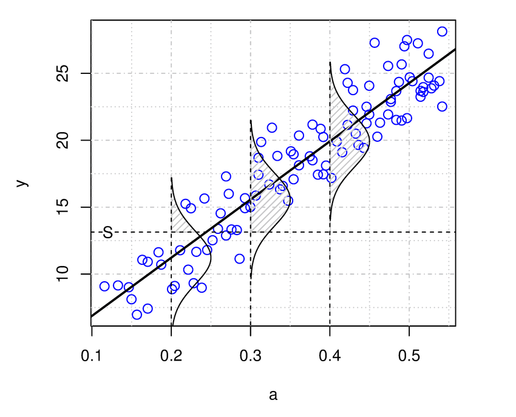
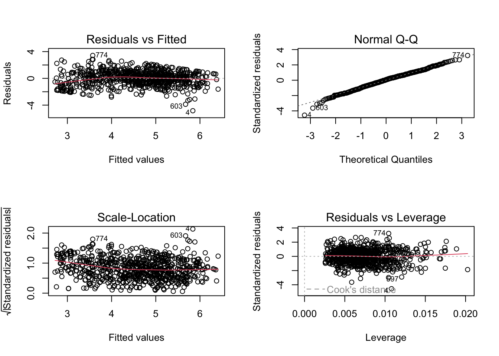

income <- c(1000, 1500, 4000, 7000)
mean(income)[1] 3375sd(income)[1] 2750A model is an approximate and simplified representation of a real phenomenon which captures its most distinctive features (i.e., trends, patterns, etc).
A mathematical model is a model built from mathematical objects, such as numbers, formulas, equations, and so on.
A statistical model is a special kind of mathematical model, informed by data and built to predict phenomena characterized by a certain degree of uncertainty, and/or to test out hypotheses about how the system being modeled actually works.
For example, we can consider the mean as a simple data model. Indeed, it can be conceived as a synthetic, simplified, and approximate representation of the distribution of a variable. It is a mathematical model since it is a number, and a statistical model since it is informed by data and implies a certain level of uncertainty. Actually, the mean is only a rough representation of a variable. In fact, single values can be more or less in line with the mean. The mean represents “on average” the different values of a variable. We can also quantify the uncertainty in this type of simple model thanks to the standard deviation. The standard deviation can be intended as an approximate measure of the average distance between the data points and the mean. A low standard deviation indicates that the values are clustered close to the mean, making the mean an excellent model. However, a high standard deviation means that the values are generally distant from the mean, making the mean a relatively poor model of the variable.
For example, let’s take a group of four friends whose monthly income is 1,000 euros, 1,500 euros, 4,000 euros, and 7,000 euros respectively. Using the mean to build a simple model of their income, we can see that the mean income is EUR 3,375. However, this is not a very good approximation of the income of these people if we want to use it to predict the income of each member of the group. The standard deviation is high (SD = 2,750 euros), indicating a great deal of variability and uncertainty. On average, the members’ income is 2,750 euros far from the mean.
income <- c(1000, 1500, 4000, 7000)
mean(income)[1] 3375sd(income)[1] 2750Let’s now consider a group of four friends who have monthly incomes of EUR 1,000, EUR 1,500, EUR 1,300, and EUR 900 respectively. Using the mean to create a simple model of their income, we can see that the mean income is EUR 1,175 with a low standard deviation (SD = 275). This group is relatively homogeneous regarding their income, and therefore, the mean serves as a reliable model for predicting the income of each member.
income <- c(1000, 1500, 1300, 900)
mean(income)[1] 1175sd(income)[1] 275.3785In linear regression, the mean is particularly important:

The image above illustrates the linear correlation between an independent variable and the mean of the dependent variable, as well as the inherent uncertainty in the statistical model. Specifically, the standard linear regression model assumes that this uncertainty follows a Gaussian (or Normal) distribution. Although the linear model predicts the variable’s average, we postulate that the true values of the dependent variable are randomly distributed around the mean, with the randomness described by the normal distribution.
Gary King, professor at Harvard University and director of the Institute for Quantitative Social Science, explains clearly the main components of any statistical model in Chapter 1 of his book Unifying Political Methodology. The Likelihood Theory of Statistical Inference. Here is what he explains.
Social system: this is the largest component of interest of social scientists. Social scientists, in a way or another, study social systems. They might be a neighborhood, a community, an election, or anything else. A social system includes features that are either known or estimable, and other important elements that remain unobserved and unobservable.
Explanatory variables: also called independent variables, are measures of the features of a social systems. They are symbolized as \(X\), where \(X\) contains measures of each of these features for all \(n\) observations.
Output: also dependent variable, is the output generated by the social system, and a consequence of the social system that can be observed and measured. For example, an election produces a victorious candidate, or a a mixture of certain political and cultural attitudes can generate more or less support for the government.
Random variables: the output of a social system which is generated in a probabilistic manner, is a random variable (symbolized as \(Y\)). Random variables are, operationally, the assignment of numbers to events (e.g.: Democratic President = 1, Republican President = 0; income = number of dollars, etc.), with a probability assigned to each number. Random variables are not really “random”, but follow specific probabilistic rules (i.e., they follow a particular statistical distribution, for example, a Normal distribution). Hence, although different outputs can be generated when running the same experiment under the same identical conditions, different output have different probabilities to be generated by the social system.
The data: we don’t observe the random variable, but the data (which are generally symbolized as \(y\)) , which are \(n\) realizations of the random variable \(Y\). The data are a set of numbers that is assumed to be randomly drawn from the random variable \(Y\) through a procedure called sampling. A data set is also called “the sample”.
Statistical model: finally, a statistical model is a formal representation fo the process by which a social system produces output. The general goal of the model is to learn about the underlying process that generates output and hence the observed data. Statistical models are assumed to have both systematic and stochastic components. In the linear model below, for example, the stochastic component is represented as \(\epsilon\), and the systematic part is represented as \(bX_j\).
\[Y_j = i + bX_j + \epsilon_j\]
The stochastic component is also called the error term, and in a linear model is assumed to follow a normal probability distribution: \(\epsilon_j \sim f_n(e_j|0,\sigma^2)\).
An equivalent and more general way to express this statistical model is as follows:
\[ Y_j \sim f_n(y_j|\mu_j, \sigma^2)\\ \mu_j = x_j\beta \]
This expression more clearly shows that the output of the social system, the dependent variable \(Y\) is a random variable, which in this case follows a normal probability distribution with mean \(\mu\) and standard deviation \(\sigma^2\), and where the mean \(\mu\) varies across observations based on the values of the independent variables \(X\). In statistical terms, the mean \(\mu\) and standard deviation \(\sigma^2\) are the parameters of the normal distribution.
Although in this course we focus only on linear model, the above expression can be further generalized to cover almost any other model, by written the two equations as follows:
\[ Y \sim f(y|\theta,\alpha)\\ \theta = g(X,\beta) \]
The first equation represents the stochastic component, and is read “\(Y\) is distributed as a function \(f\) of the data \(y\) given the parameter \(\theta\) and \(\alpha\)”. Here, \(f\) is a probability distribution, which is an explicit model of the form of uncertainty in the random variable \(Y\) across repeated “experiments” (see above), and \(\theta\) and \(\alpha\) are parameter vectors which can be predicted by using other variables.
The second equation represents the systematic component. Here, \(g\) is a functional form, i.e., a precise statement of how a particular characteristics (\(\theta\)) of the random dependent variable (\(Y\)) is generated by certain features of the social system (the independent variables \(X\)). In the linear model case, the functional form \(g\) is linear. The vector of elements \(\beta\) is called the effect parameters, representing the degree and direction of dependence of \(\theta\) on the explanatory variables $X$. They are the so-called “coefficients” that we find when we fit a linear regression model. The interpretation of the effect parameters depends on the functional form that links the independent variables \(X\) to the parameter of the independent variable $Y$. The systematic component of the statistical model is a statement of how different known features of the social system (the explanatory variables \(X\)) generate various characteristics of the social system.
A linear model is a special kind of statistical model based on linear relationships (see the Pearson’s correlation coefficient) between two or more variables.
It is represented as a mathematical equation that links one (in case of a simple linear regression model) or more input variables (in case of a multiple linear regression model) to an output variable Y, by exploiting information contained in the association between the inputs and the output.
Linear regression models, as a basic application, can be used for answering questions of the “whether” or “if” variety. These questions ask whether two variables are correlated, causally or otherwise (explanation), or if something is more or less likely to happen in one set of circumstances or conditions than another (prediction).
To do that, regression analysis computes an equation such that, given the input variables, the result of the equation yields:
The simple linear regression model is the simplest form of a linear regression model, in that it contains only a single independent variable (\(X\)). The general form of the equation is the following:
\[Y_j = i + bX_j + e_j\]
For example, \(Y\) could be income, and \(X\) could be a variable used to try to explain/predict it, say level of education.
The multiple linear regression model is an extension of this simpler model, which includes more than one independent variable. For example, it may be used to predict income based on level of education, sex, and other variables.
\[Y_j = i + b_1X_{1j} + b_2X_{2j} + ... + e_j\]
From a data set containing the values of the \(Xs\) and \(Y\) variables, linear regression modeling finds the weights \(b_1\), \(b_2\) (referred to as regression coefficients) that, multiplied by the values of the variable, represents the best approximation of the values of \(Y\) in the equation. To estimate the coefficients of the model, the most common procedure is referred to as ordinary least squares (OLS) criterion.
In practice, the single linear regression model is never used. If you are only interested in the relationship between two variables, you can calculate a correlation coefficient.
However, the problem with the correlation coefficient is that the relationships between two variables is always ambiguous, and alternative explanations abound. For example, the correlation between income and education can simply reflect a difference in the status of the family of origin. Wealthier families have more resources and connections, send their sons and daughters to a better school and help them find better jobs, resulting in higher incomes.
In general terms, what makes the association between two variables \(X\) and \(Y\) ambiguous, leading to alternative explanations, is that people who differ on X and Y also likely differ on many other things, and it may be those things that are responsible for the association.
Multiple regression gives a researcher a means of engaging in a kind of mathematically aided counter-factual reasoning by estimating what the association between each independent variable X and the dependent variable Y would be if people did not differ on the other independent variables in the regression model. It does this by “mathematically equating” people (or whatever the unit of analysis is) on those variables. This equating process is also referred to as partialling out those other variables from the association between \(X\) and \(Y\), or statistically control of those variables.
Partial out: “to give (a variable) a fixed value while considering the relationship between two related variables”
For example, to estimate the effect of level of education on income, we could fit a multiple linear regression model. This model would include variables that we think are associated with income. For example, level of education, wealth of the family of origin, and a measure of social connection. This model can estimate the effect of education on income, holding constant all other independent variables (i.e., net of the effect of other variables). In practical terms, this means that the regression model shows an estimate of the effect of education on income among individuals with families of the same status and with the same type of social connections, so this variable should no longer have a confounding effect on our estimate of the effect of education.
To present the main elements of a linear regression model, let’s consider its simplest form:
\[Y_j = i + bX_j + e_j\]
The index \(_j\) indicates any unique observation/case within the data set. Since rows represent cases, you can view the subscript \(_j\) as a row in a data set.
j Y X
1 1 12 10
2 2 23 35
3 3 34 45
4 4 54 57
5 5 45 87The index may also be omitted and the regression equation represented as \(Y = i + bX + e\), but it makes it explicit that, for each case, the equation establishes a relationships between the values of the variable \(Y\) (the dependent or outcome variable) and \(X\) (the independent or antecedent variable).
\[Y_j = i + bX_j + e_j\]
The \(i\) indicates a numerical coefficient estimated by the regression model. It is a constant (i.e., a fixed value) and is referred to as intercept or constant. It is the average (mean) value of \(Y\) when the independent variable(s) assume the value 0.
Although the intercept is mathematically significant, sometimes it makes no sense and cannot be interpreted. It is not meaningful when:
For example, if we predict the weight of people based on their height, the intercept has no substantial meaning, because there is no person with a height equal to zero.
\[Y_j = i + bX_j + e_j\]
The letter \(b\) (or beta) indicates a numerical coefficient estimated by the regression model (e.g., through the OLS procedure). It is referred to as regression coefficient and represents the weight assigned to the values of the variable \(X\).
In the simple linear model, it represents the average change in \(Y\) for every one unit increase in \(X\). In the multiple linear regression model it represents the average change in \(Y\) for every one unit increase in \(X\), holding all other independent variables constant. For this reasons, these coefficients represent measures of partial association (i.e., each coefficient represents the part of association that is specific to a particular variable).
The letter \(e\) indicates the error term or residual, and represents the imprecision and uncertainty in the estimate. It is the difference between the values of \(Y\) estimated by the model, and the true values of \(Y\).
The R function to fit a linear regression model is lm.
The function takes at least two arguments separated by a tilde (the symbol ~ : check online how to write that with your specific keyword. You can also copy/paste it from the help by typing ?tilde):
+) symbol.The argument data is used for the name of the data set, which is usually a data frame.
The function summary is used to see the results of the model fitting functions.
Load the data set glbwarm.
# load the data set
glbwarm <- read.csv("data/glbwarm.csv")Let’s fit a simple linear regression model that predicts support for government action to mitigate climate change (independent variable \(Y = govact\)), based on negative emotion about this issue (\(X = negemot\)).
lm1 <- lm(govact ~ negemot, data = glbwarm)The function summary produces the output.
summary(lm1)
Call:
lm(formula = govact ~ negemot, data = glbwarm)
Residuals:
Min 1Q Median 3Q Max
-4.3285 -0.6731 0.1018 0.7554 3.2142
Coefficients:
Estimate Std. Error t value Pr(>|t|)
(Intercept) 2.75732 0.09866 27.95 <2e-16 ***
negemot 0.51424 0.02548 20.18 <2e-16 ***
---
Signif. codes: 0 '***' 0.001 '**' 0.01 '*' 0.05 '.' 0.1 ' ' 1
Residual standard error: 1.111 on 813 degrees of freedom
Multiple R-squared: 0.3338, Adjusted R-squared: 0.333
F-statistic: 407.3 on 1 and 813 DF, p-value: < 2.2e-16The following piece of code fits a multiple linear regression model that predicts support for government action to mitigate climate change (independent variable \(Y = govact\)), based on several variables.
lm2 <- lm(govact ~ negemot + posemot + ideology + sex + age,
data = glbwarm)summary(lm2)
Call:
lm(formula = govact ~ negemot + posemot + ideology + sex + age,
data = glbwarm)
Residuals:
Min 1Q Median 3Q Max
-4.8381 -0.6834 0.0705 0.7008 3.4266
Coefficients:
Estimate Std. Error t value Pr(>|t|)
(Intercept) 4.063607 0.205323 19.791 < 2e-16 ***
negemot 0.440781 0.026433 16.676 < 2e-16 ***
posemot -0.026778 0.028145 -0.951 0.342
ideology -0.218269 0.027043 -8.071 2.51e-15 ***
sex -0.010066 0.076743 -0.131 0.896
age -0.001309 0.002371 -0.552 0.581
---
Signif. codes: 0 '***' 0.001 '**' 0.01 '*' 0.05 '.' 0.1 ' ' 1
Residual standard error: 1.067 on 809 degrees of freedom
Multiple R-squared: 0.3883, Adjusted R-squared: 0.3845
F-statistic: 102.7 on 5 and 809 DF, p-value: < 2.2e-16Consider the output of the lm2 multiple linear regression model.
summary(lm2)
Call:
lm(formula = govact ~ negemot + posemot + ideology + sex + age,
data = glbwarm)
Residuals:
Min 1Q Median 3Q Max
-4.8381 -0.6834 0.0705 0.7008 3.4266
Coefficients:
Estimate Std. Error t value Pr(>|t|)
(Intercept) 4.063607 0.205323 19.791 < 2e-16 ***
negemot 0.440781 0.026433 16.676 < 2e-16 ***
posemot -0.026778 0.028145 -0.951 0.342
ideology -0.218269 0.027043 -8.071 2.51e-15 ***
sex -0.010066 0.076743 -0.131 0.896
age -0.001309 0.002371 -0.552 0.581
---
Signif. codes: 0 '***' 0.001 '**' 0.01 '*' 0.05 '.' 0.1 ' ' 1
Residual standard error: 1.067 on 809 degrees of freedom
Multiple R-squared: 0.3883, Adjusted R-squared: 0.3845
F-statistic: 102.7 on 5 and 809 DF, p-value: < 2.2e-16This output is composed of the several sections.
At the top of the output, there is the five-number summary of residuals (the errors). In linear regression, the distribution is expected to have some characteristics, such as to be normally distributed and homoskedastik. These characteristics will be discussed later when presenting the linear regression assumptions.
Before interpreting the results (the coefficients), you want to determine how well the model fits the data. Does it do a good job of explaining changes in the dependent variable? At the bottom of the table, there is general information to evaluate the “goodness-of-fit” of the model:
Residual standard error (or RSE) is the standard deviation of the residuals. It is a measure of the variability or dispersion of the observed data points around the fitted regression line in a linear regression model. The lower the value for RSE, the more closely a model is able to fit the data. It is calculated as the square root of the residual sum of squares (i.e., the differences between the predicted and observed values: \(RSS = \Sigma_{j=1}^{n}(\hat y_j-y_j)\)) divided by the degrees of freedom (\(n-p-1\)), where \(n\) is the number of observations in the data set, and \(p\) is the number of predictors (independent variables) in the model.
In simpler terms, RSE tells you how much the observed data points deviate from the fitted regression line on average. In this case, the average deviation is 1.067 points. The RSE values are expressed in the same units as the dependent variable. In this case, the dependent variable is \(govact\) which is measured on a scale from 1 to 7.
In general terms, a smaller RSE indicates that the data points are closer to the fitted line and the model is a better fit for the data. Conversely, a larger RSE indicates that the data points are more spread out and the model may not be a good fit for the data.
The most used index of goodness-of-fit is the R-squared (or \(R^2\)). It indicates on a scale from 0 to 1 the extent to which the model can explains/predicts the dependent variable. It is calculated as the ratio of the residual sum of squares (i.e., the differences between the observed values and the predicted values: \(RSS = \Sigma_{j=1}^{n}(\hat y_j-y_j)\)) to the total variation (total sum of squares, i.e., the difference between the observed values and the mean of the variable: \(TSS = \Sigma_{j=1}^{n}(y_j-\bar y)\)).
RSS <- sum( (lm2$fitted.values - lm2$model$govact)^2 )
TSS <- sum( (lm2$model$govact - mean(lm2$model$govact))^2 )
1 - (RSS/TSS)[1] 0.3883189Considering the formula, it should be clear that \(R^2\) is the standardized residual standard error of the regression (RSE). It is generally interpreted as the proportion of variance (of the dependent variable) explained by the model. Adjusted R-squared adds a penalty based on the complexity of the model (number of variables) and can be preferred when fitting multiple linear regression models. Both the Multiple R-squared and the Adjusted R-squared values can be reported. This value can be reported as a percentage of the explained variance. For example, in this case, the model explains about 38% of the variance.
The \(R\) in \(R^2\) might remind you the Pearson correlation coefficient \(r\). Indeed, in the simple linear regression model, \(R^2\) is just the square of the Pearson correlation coefficient.
Gary King (1998) also notices that \(R^2\) is a relative measure that can be used to compare different models used to predict the same dependent variable:
\(R^2\) is typically understood as the percentage of variance in \(y\) (n.r.: \(y\) is the observed variable) explained by the systematic component. But some of the variation in \(y\) is systematic and some results from the random variation across experiments as governed by the stochastic component. Intuitively, one wants \(R^2\) to measure only the proportion of systematic variation explained. To explain too little of the systematic part or too much of the random part are equally undesirable alternatives. Unfortunately, whether 58%, 5%, or 99% is all, less than all, or an over-fitting of the systematic component is not knowable in the context of one regression. The concept of an \(R^2\) that is “good” in an absolute way is nonsensical. Hence, like likelihood, \(R^2\) and other goodness-of-fit statistics are relative measures only (King, G. (1998), p. 24, footnote 7).
The last row of the output reports the F-statistic and the p-value of the model. We already said that linear regression modeling attempts to identify variables that help explain/predict another variable better than its own average (mean). The F-statistic compares the fitted linear model with a model that only uses the mean of the dependent variable. If the p-value is below 0.05, the fitted model is significantly better that a model that uses only the mean.
The calculation of the F-statistic employs the same mathematical and statistical elements already discussed:
TSS <- sum( (glbwarm$govact - mean(glbwarm$govact))^2 )
RSS <- sum( (lm2$fitted.values - glbwarm$govact)^2 )
p <- 5 # number of independent variables we are testing
n <- length(glbwarm$govact) # total number of observations
F_statistic <- ( (TSS-RSS)/p ) / (RSS/(n-p-1))
F_statistic[1] 102.7169The p-value associated with the F-statistic is the probability of obtaining a value as extreme or more extreme than the observed F-statistic, assuming that the null hypothesis is true. A small p-value (usually less than 0.05) indicates strong evidence against the null hypothesis and suggests that the regression model is a good fit to the data.
Note: The p-value is expressed in scientific notation (e.g., 2.2e-16). To convert it to a common number, you can use the function
format, adding the number you want to convert, and the optionscientific=FALSE. For example:
format(2.2e-16, scientific=FALSE)[1] "0.00000000000000022"The coefficient table includes the following information:
Estimate: the regression coefficients of the model (i.e., the \(b\) (beta) “weight” of the independent variables).
Std. Error: the standard error of the estimates (coefficients), i.e., their standard deviations. We know that standard deviation is a measure of spread and precision with which the regression coefficient is measured.
t value: this is the t-statistic and measures the significance of each coefficient. It is calculated as the ratio of the coefficient to its standard error. It’s used to calculate the p-value (\(Pr (>|t|)\)). Statistically significant p-values are those lower than 0.05 and are marked with one or more asterisks. They indicate that the independent variable has a statistically significant relationship with the dependent variable. In other words, we can conclude that, if all model assumptions held, there is an association between the variables, since it would be unlikely (less than 5% chance if \(p < 0.05\)) to observe similar values if such an association did not exist.
Notice that the analysis is assumed to be carried out on a representative sample to draw conclusions on a population. A sample is a subset of cases (e.g., the 815 Americans in the
glbwarmdata set) collected from a larger population (e.g., the entire American population). The sample represents the population on a small scale. A “statistically significant” relationship indicates that, under the statistical model, the observed relationship is likely true and not an artifact in the data sample we analyzed. It suggests that the relationship exists both in the observed data (a sample) and in the population from which the data originated.
This is how we can interpret the output of the lm2 multiple linear regression model.
summary(lm2)
Call:
lm(formula = govact ~ negemot + posemot + ideology + sex + age,
data = glbwarm)
Residuals:
Min 1Q Median 3Q Max
-4.8381 -0.6834 0.0705 0.7008 3.4266
Coefficients:
Estimate Std. Error t value Pr(>|t|)
(Intercept) 4.063607 0.205323 19.791 < 2e-16 ***
negemot 0.440781 0.026433 16.676 < 2e-16 ***
posemot -0.026778 0.028145 -0.951 0.342
ideology -0.218269 0.027043 -8.071 2.51e-15 ***
sex -0.010066 0.076743 -0.131 0.896
age -0.001309 0.002371 -0.552 0.581
---
Signif. codes: 0 '***' 0.001 '**' 0.01 '*' 0.05 '.' 0.1 ' ' 1
Residual standard error: 1.067 on 809 degrees of freedom
Multiple R-squared: 0.3883, Adjusted R-squared: 0.3845
F-statistic: 102.7 on 5 and 809 DF, p-value: < 2.2e-16The model explains a statistically significant (p < .001) and substantial proportion of variance (Multiple R-squared: 0.3883, Adjusted R-squared: 0.3845).
The intercept term in a linear regression model represents the value of the dependent variable when all the independent variables in the model are equal to zero. The intercept is not always meaningful. You need to consider the distribution of your variables (e.g., using the five-number summary). For example, zero does not even exist in the distribution of negemot and ideology. Therefore, the intercept is not meaningful.
summary(glbwarm$negemot) Min. 1st Qu. Median Mean 3rd Qu. Max.
1.000 2.330 3.670 3.558 5.000 6.000 summary(glbwarm$ideology) Min. 1st Qu. Median Mean 3rd Qu. Max.
1.000 3.000 4.000 4.083 5.000 7.000 Take into consideration the statistical significance of the variables. Only two variables are statistically significant: negemot and ideology. They are significant at p < 0.001 (three asterisks). This means that there is a 1 in 1000 chance of observing such values in a sample, if there was no real relationship between the variables in the population. The other variables are not statistically significant. This means that we cannot conclude that these independent variables are correlated to the dependent variable.
The coefficients of a multiple regression model are measures of partial association that quantify the component of the association between an independent and a dependent variable that is unique to that independent variable, relative to other independent variables in the model.
When we have continuous or discrete variables (e.g.: negative emotion and ideology), we can read the coefficients as follows:
Holding all other variables constant (or, “all other variables being equal”, or a similar formulation), two cases that differ by one unit on the negative emotion scale, are estimated to differ by 0.44 unit on average in their support for government action to mitigate climate change. Or also: a one-unit increase on the negative emotion scale (negemot) would result in a 0.44 increase in support for government action to mitigate climate change.
Holding all other variables constant, two cases that differ by one unit on the ideology scale, are estimated to differ by -0.22 unit in their support for government action to mitigate climate change, with cases one unit higher on that scale (i.e., republicans) estimated to be -0.22 unit lower in their support for government action. Or also, a one-unit increase in the ideology variable would result in a 0.22 decrease (notice the negative sign: -0.218269) in support for government action to mitigate climate change.
A dichotomous variable is also a variable that takes on only two possible values. Examples of dichotomous variables include variables like gender (male/female), yes/no questions, and success/failure outcomes. The two values they take are usually represented by 0 and 1.
The variable sex in the glbwarm data set is a dichotomous variable where 0 represents females and 1 represents males. A unit change corresponds to switching from one category (0) to the other (1).
The coefficient for sex (\(-0.010066\)) indicates that, on average, males (1) are less supportive of government action by 0.01 units compared to females (0). However, this difference is not statistically significant, and thus, there is no evidence of systematic gender differences in support for government action.
Note that to interpret a dichotomous variable of this kind, it is necessary to know what value 0 and value 1 correspond to. Also note that the lowest value (0) is used as the reference category. Therefore, the coefficient of a dichotomous variable expresses the difference, on average, in the value of the dependent variable between category 0 (in this case females) and 1 (in this case males).
Multicategorical variables are expressed using dummy variables. Notice that a dummy variable is a specific type of dichotomous variable, but the two are not synonymous. The term “dichotomous variable” refers to variables with only two states, such as “male” or “female”. It is one of several types of variables, including “continuous variables”, “discrete variables”, and “ordinal variables”.
On the other hand, a dummy variable represents the absence (0) or presence (1) of a particular characteristic and is often used to transform multicategorical variables. This process, called “dummy coding”, involves creating a new variable that takes on a value of 1 if the original variable belongs to a certain category and 0 otherwise. For example, if the original variable was “color” with levels “red,” “green,” and “blue,” three dummy variables could be created to represent each color: “red” (1 if red, 0 otherwise), “green” (1 if green, 0 otherwise), and “blue” (1 if blue, 0 otherwise). Therefore, dummy variables often appear as a set of variables that allows us to specify categorical explanatory variables as independent variables in statistical analyses.
Since there are no multicategorical variables in the glbwarm data set, we create one by grouping the age variable into age classes. We create this categorical variable as a factor, used for this type of variable. Note that in the last line, we specify the levels of the categorical variable, which are the categories included in the categorical variable. The first level is always the reference category in the regression analysis.
require(tidyverse)
glbwarm <- glbwarm %>%
mutate(
# Create categories
age_group = dplyr::case_when(
age >= 17 & age <= 34 ~ "17-34",
age >= 35 & age <= 54 ~ "35-54",
age >= 55 ~ "55+"
),
# Convert to factor
age_group = factor(
age_group,
level = c("17-34","35-54", "55+")
)
)
barplot(table(glbwarm$age_group), main = "Age Groups")
We can double check the levels of the variable by using the following command:
levels(glbwarm$age_group)[1] "17-34" "35-54" "55+" We use this variable in a new regression model.
lm3 <- lm(govact ~ negemot + posemot + ideology + sex + age_group,
data = glbwarm)
summary(lm3)
Call:
lm(formula = govact ~ negemot + posemot + ideology + sex + age_group,
data = glbwarm)
Residuals:
Min 1Q Median 3Q Max
-4.8196 -0.6738 0.0680 0.7013 3.4455
Coefficients:
Estimate Std. Error t value Pr(>|t|)
(Intercept) 4.014414 0.194228 20.669 < 2e-16 ***
negemot 0.440742 0.026446 16.666 < 2e-16 ***
posemot -0.026907 0.028148 -0.956 0.339
ideology -0.219078 0.026970 -8.123 1.7e-15 ***
sex -0.005455 0.077968 -0.070 0.944
age_group35-54 0.015133 0.102199 0.148 0.882
age_group55+ -0.044887 0.097945 -0.458 0.647
---
Signif. codes: 0 '***' 0.001 '**' 0.01 '*' 0.05 '.' 0.1 ' ' 1
Residual standard error: 1.068 on 808 degrees of freedom
Multiple R-squared: 0.3885, Adjusted R-squared: 0.3839
F-statistic: 85.54 on 6 and 808 DF, p-value: < 2.2e-16The variable has three levels, but as can be observed, the output reports only two levels. The omitted level is the reference category. As with the dichotomous variable sex where the reference category is 0 (female), in this case the reference category is the age class 17-34.
Similarly to the dichotomous variable case, the coefficients indicate the difference between the category indicated in the table and the reference category. For example, holding all other variables constant, individuals aged between 35 and 54 have, on average, a 0.015133 higher value on the dependent variable govact (not statistically significant).
We can also change the reference category with the command relevel. For instance, we can use older people as reference. The interpretation changes accordingly. For example, individuals aged between 17 and 34 have, on average, a 0.044887 higher value on the dependent variable govact (not statistically significant).
glbwarm$age_group <- relevel(glbwarm$age_group, ref = "55+")lm3b <- lm(govact ~ negemot + posemot + ideology + sex + age_group,
data = glbwarm)
summary(lm3b)
Call:
lm(formula = govact ~ negemot + posemot + ideology + sex + age_group,
data = glbwarm)
Residuals:
Min 1Q Median 3Q Max
-4.8196 -0.6738 0.0680 0.7013 3.4455
Coefficients:
Estimate Std. Error t value Pr(>|t|)
(Intercept) 3.969526 0.199454 19.902 < 2e-16 ***
negemot 0.440742 0.026446 16.666 < 2e-16 ***
posemot -0.026907 0.028148 -0.956 0.339
ideology -0.219078 0.026970 -8.123 1.7e-15 ***
sex -0.005455 0.077968 -0.070 0.944
age_group17-34 0.044887 0.097945 0.458 0.647
age_group35-54 0.060020 0.088591 0.677 0.498
---
Signif. codes: 0 '***' 0.001 '**' 0.01 '*' 0.05 '.' 0.1 ' ' 1
Residual standard error: 1.068 on 808 degrees of freedom
Multiple R-squared: 0.3885, Adjusted R-squared: 0.3839
F-statistic: 85.54 on 6 and 808 DF, p-value: < 2.2e-16What R does in the background is transform the multicategorical variable into a set of dummy variables. In this case, each dummy variable represents a specific age group and takes a value of 1 if the individual falls within that age group and 0 otherwise. Notice that to represent a variable composed of N categories, N-1 dummy variables are needed. For example, in this case, we have three age groups, so N-1 = 2 dummy variables are needed. Indeed, it is not necessary to use a dummy variable for the last age group, as it is represented by all individuals who have a value of zero in the previous dummy variables.
Consider for example three individuals of different age groups. They are represented through dummy coding. As you can see, only two dummy variables are needed, as the last category corresponds to individuals who have a value of 0 in the other categories.
data.frame("age17_34" = c(1,0,0),
"age35_54" = c(0,1,0),
"age55+" = c(0,0,1)) age17_34 age35_54 age55.
1 1 0 0
2 0 1 0
3 0 0 1Let’s create, for comparison, two dummy variables instead of a single factor variable as previously done, and run the same regression model to compare the results. As you can see, they are identical.
# dummy coding
glbwarm$age_17_34 <- ifelse(glbwarm$age >= 17 & glbwarm$age <= 34, 1, 0)
glbwarm$age_35_54 <- ifelse(glbwarm$age >= 35 & glbwarm$age <= 54, 1, 0)
# we omit the third class, as it is already represented by the zeros in
# the first two dummy variables
# glbwarm$age_55 <- ifelse(glbwarm$age >= 55, 1, 0)lm3c <- lm(govact ~ negemot + posemot + ideology + sex +
age_17_34 + age_35_54,
data = glbwarm)
summary(lm3c)
Call:
lm(formula = govact ~ negemot + posemot + ideology + sex + age_17_34 +
age_35_54, data = glbwarm)
Residuals:
Min 1Q Median 3Q Max
-4.8196 -0.6738 0.0680 0.7013 3.4455
Coefficients:
Estimate Std. Error t value Pr(>|t|)
(Intercept) 3.969526 0.199454 19.902 < 2e-16 ***
negemot 0.440742 0.026446 16.666 < 2e-16 ***
posemot -0.026907 0.028148 -0.956 0.339
ideology -0.219078 0.026970 -8.123 1.7e-15 ***
sex -0.005455 0.077968 -0.070 0.944
age_17_34 0.044887 0.097945 0.458 0.647
age_35_54 0.060020 0.088591 0.677 0.498
---
Signif. codes: 0 '***' 0.001 '**' 0.01 '*' 0.05 '.' 0.1 ' ' 1
Residual standard error: 1.068 on 808 degrees of freedom
Multiple R-squared: 0.3885, Adjusted R-squared: 0.3839
F-statistic: 85.54 on 6 and 808 DF, p-value: < 2.2e-16The interpretation of residuals requires to discuss the assumptions of linear models. Linear regression is founded on some assumptions. The violation of these assumptions can have adverse effects on the interpretation of the model and on inference, therefore we should be mindful of the assumptions the regression model makes. The main assumptions of the linear regression model are the following:
R can easily provide the analyst with four diagnostic plots you can use to assess the assumptions of the model.
You can visualize the plots by using the function plot applied to the “object” corresponding to your fitted model. You can visualize the plots together by using par(mfrow=c(2,2)) before calling the plot function. In this way, you create a 2x2 layer to show the 4 main diagnostic plots on the same page. You can also visualize a single plot by using the number of the plot inside the plot function (e.g.: plot(lm_object, 1)).
par(mfrow=c(2,2))
plot(lm2)
In general, you want the Normal Q-Q plot to show points along a diagonal line, and the other three plots showing randomly scattered points, without any evident systematic pattern.
Points showing a conic shape in the Residuals vs Fitted and Scale-Location plots are indicative of an heteroskedasticity problem (violation of the homoscedasticity assumption). Ideally, you should see a roughly horizontal line with equally spread points. A statistical test for checking homoscedasticity is the Breusch-Pagan test. It is included in the lmtest library. A p-value < 0.05 suggests heteroskedasticity.
install.package("lmtest")library(lmtest)Loading required package: zoo
Attaching package: 'zoo'The following objects are masked from 'package:base':
as.Date, as.Date.numericbptest(lm2)
studentized Breusch-Pagan test
data: lm2
BP = 14.787, df = 5, p-value = 0.01131Heteroskedasticity does not impact coefficients, but affects statistical tests (e.g., tests that conclude whether the coefficients are statistically significant). There are different ways to mitigate or resolve this and other assumption issues. A way is to correct the regression model with Heteroscedasticity-Consistent Standard Errors. In R you need the lmtest and sandwich package.
install.package("sandwich")library(lmtest)
library(sandwich)
coeftest(lm2, vcov = vcovHC(lm2, type = "HC3"))
t test of coefficients:
Estimate Std. Error t value Pr(>|t|)
(Intercept) 4.0636065 0.1965257 20.6772 < 2.2e-16 ***
negemot 0.4407807 0.0282082 15.6260 < 2.2e-16 ***
posemot -0.0267777 0.0317203 -0.8442 0.3988
ideology -0.2182689 0.0289974 -7.5272 1.384e-13 ***
sex -0.0100662 0.0753805 -0.1335 0.8938
age -0.0013087 0.0022916 -0.5711 0.5681
---
Signif. codes: 0 '***' 0.001 '**' 0.01 '*' 0.05 '.' 0.1 ' ' 1You can also see that certain dots are marked by a number. These are points with unexpectedly high residuals (error) and you could inspect them to find out why (e.g., to exclude there are errors in the data set). Also check if any point in the Residuals vs Leverage plot falls outside of Cook’s distance (a red dashed lines). These points are considered to be influential observations. Influential points have a large influence on the model and should be carefully inspected. In this case there are no influential points, and the red dashed line is not even displayed.
To verify multicollinearity you can also calculate the VIF (Variance Inflation Factor). The function to calculate it is vif, and is included in the package car. The smallest possible value of VIF is one (absence of multicollinearity), and as a rule of thumb, a VIF value that exceeds 5 or 10 indicates a problematic amount of collinearity.
# install the package
install.packages("car")library(car)Loading required package: carData
Attaching package: 'car'The following object is masked from 'package:dplyr':
recodeThe following object is masked from 'package:purrr':
somecar::vif(lm2) negemot posemot ideology sex age
1.166374 1.026410 1.194399 1.052894 1.071034 There are plenty of resources online about linear regression and R. For example:
Use the data sets from the World Value Survey and the European Value Study to formulate a hypothesis and conduct a multiple linear regression analysis to either support or reject it. The model should include one dependent variable, three independent variables and two control variables (typically demographic variables such as gender and age), for a total of five predictors. Refer to the documentation to identify the variables, and utilize the provided code to generate the data set. Ensure to thoroughly examine the variables and consult the documentation to accurately interpret the variable values (i.e., to check what a high value corresponds to and what a low value corresponds to).
# Code to create a dataset "df" that includes the desired variable ####
library(haven)
library(tidyverse)
library(janitor)
Attaching package: 'janitor'The following objects are masked from 'package:stats':
chisq.test, fisher.test# load the full dataset: ZA7505_v4_0_0
ZA7505_v4_0_0 <- read_dta("data/ZA7505_v4-0-0.dta")
# create the research dataset "df"
df <- ZA7505_v4_0_0 %>%
# keep Austrian data only
filter(cntry_AN == "AT") %>%
# write here the codes of the variables you have choosen
select(year, cntry_AN, X003, X003R, A006, A065, E033, A124_09, D081, F120, F121, F122, C001_01) %>%
# you can choose to rename the selected columns.
# If you prefer to work with variable codes cancel everything from "rename" to the pipe
# symbol "%>%" after "F122"
rename("Age" = X003,
"Age recoded" = X003R,
"Important in life: Religion" = A006,
"Member: Belong to religious organization" = A065,
"Dont like as neighbours: homosexuals" = A124_09,
"Homosexual couples are as good parents as other couples" = D081,
"Jobs scarce: Men should have more right to a job than women" = C001_01,
"Self positioning in political scale" = E033,
"Justifiable: Abortion" = F120,
"Justifiable: Divorce" = F121,
"Justifiable: Euthanasia" = F122) %>%
# clean the column names
janitor::clean_names() %>%
# keep only positive values
filter(if_all(where(is.numeric), ~ .x >= 0))In the case of this specific data set and data format, the values of the variables are labeled, and the labels can be accessed by using the attributes function.
attributes(df$age_recoded)$labels Missing: Other Not asked in survey Not applicable No answer
-5 -4 -3 -2
Don´t know 15-24 25-34 35-44
-1 1 2 3
45-54 55-64 65 and more years
4 5 6 attributes(df$important_in_life_religion)$labels Missing: Other Not asked in survey Not applicable
-5 -4 -3
No answer Don´t know Very important
-2 -1 1
Rather important Not very important Not at all important
2 3 4 Run the analysis and write a short report including:
Formulation of the hypothesis (one hypothesis for each of the three independent variable, one sentence for each hypothesis).
Sample size of the data set, histogram of the dependent variable, and a table reporting the variables’ summary statistics (mean and standard deviations of the variables, minimum and maximum) when appropriate (i.e., for quantitative variables). For qualitative variables, report the frequencies (using the command table and prop.table: for example:
# absolute frequencies
table(df$age_recoded)
1 2 3 4 5 6
72 192 212 254 211 314 # relative frequencies
round( prop.table(table(df$age_recoded)), 2)
1 2 3 4 5 6
0.06 0.15 0.17 0.20 0.17 0.25 A multiple linear regression model to predict/explain your independent variable using dependent variables of your choice. Report the regression table and provide the appropriate interpretation.
Check out the diagnostic plots and provide an interpretation of the appropriateness of the linear model: do you see any evident pattern in the points? Are the dots grouped along a diagonal line in the normal Q-Q plot? Also calculate the Variance Inflation Factor (VIF) using the function vif function in the car package.
Please use Quarto Document to create the report, as it includes the code and the output. The easiest way to create a nice report is to render to html. See this tutorial to create a Quarto document, and copy the options to create a self-contained html report here.
Report the findings using APA-style. For example:
We tested if negative and positive emotions significantly predicted participants’ support for government, controlling for sex, age, and ideology. The results of the regression indicated the predictors explained 38.45% of the variance (Adj. R2 =.3845, F(5, 809) = 102.7, p < .001). It was found that negative emotions significantly predicted participants’ support for government (b = .44, p < .001), while positive emotions did not significantly predict participants’ support for government (b = -.027, p = .342).
Also report the results of the regression model using a standard regression table. You can refer to any regression table published on a scientific journal (e.g., p. 970), and also use the stargazer function in the homonym package for printing the table directly in the Quarto report.
install.packages("stargazer")You can print and copy
library(stargazer)
stargazer(lm2, type="text", style = "apsr")
--------------------------------------------
govact
--------------------------------------------
negemot 0.441***
(0.026)
posemot -0.027
(0.028)
ideology -0.218***
(0.027)
sex -0.010
(0.077)
age -0.001
(0.002)
Constant 4.064***
(0.205)
N 815
R2 0.388
Adjusted R2 0.385
Residual Std. Error 1.067 (df = 809)
F Statistic 102.717*** (df = 5; 809)
--------------------------------------------
*p < .1; **p < .05; ***p < .01 The following exercise is based on the estress data set (estress.csv).
The participants in the estress study (162 male, 100 female, sex in the data, 0 = female, 1 = male) were asked a series of questions about how they felt their business was doing.
Their responses were used to construct an index of economic stress (estress in the data set, with high scores reflecting greater economic stress).
They were also asked the extent to which they had various feelings related to their business, such as “discouraged,” “hopeless,” “worthless,” and the like, an aggregation of which was used to quantify business-related depressed affect (affect in the data set, with higher scores reflecting more depressed affect).
They were also asked a set of questions to quantify their intentions to withdraw from entrepreneurship in the next year (withdraw in the data set, with higher scores indicative of greater withdrawal intentions).
There is also a measure of entrepreneurial self-efficacy which indexes a person’s confidence in his or her ability to successfully engage in various entrepreneurship-related tasks such as setting and meeting goals, creating new products, managing risk, and making decisions (ese in the data set).
The data set also includes the length of time in the business, in years (tenure in the data set), and the age of these entrepreneurs (age).
Using the estress data set, write a short data analysis report including:
Summary statistics: five number summary, standard deviation, and the sample size of the data set.
A multiple linear regression model to predict/explain withdraw intention based on the following independent variables: affect, sex, estress, age, tenure, ese. Report the regression table and provide the appropriate interpretation.
Check out the diagnostic plots and provide an interpretation: do you see any evident pattern in the points? Are the dots grouped along a diagonal line in the normal Q-Q plot? Also calculate the Variance Inflation Factor (VIF) using the function vif function in the car package.